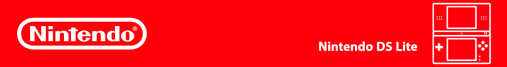
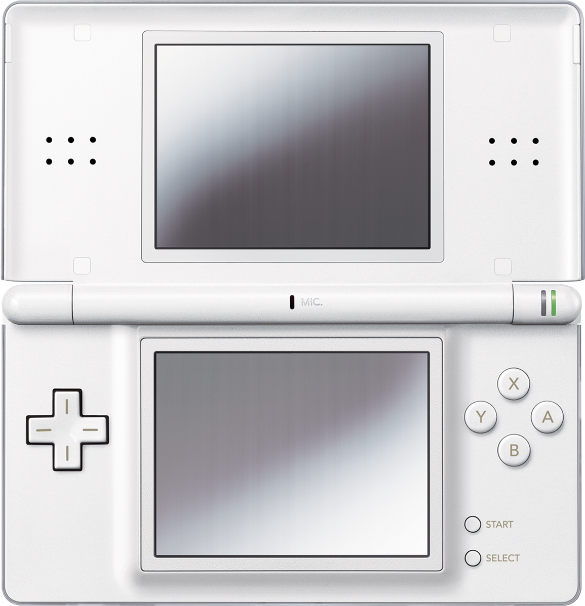
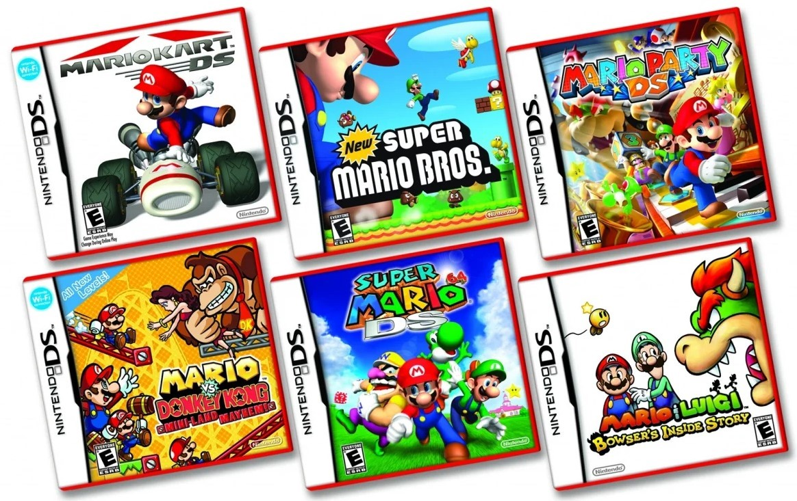
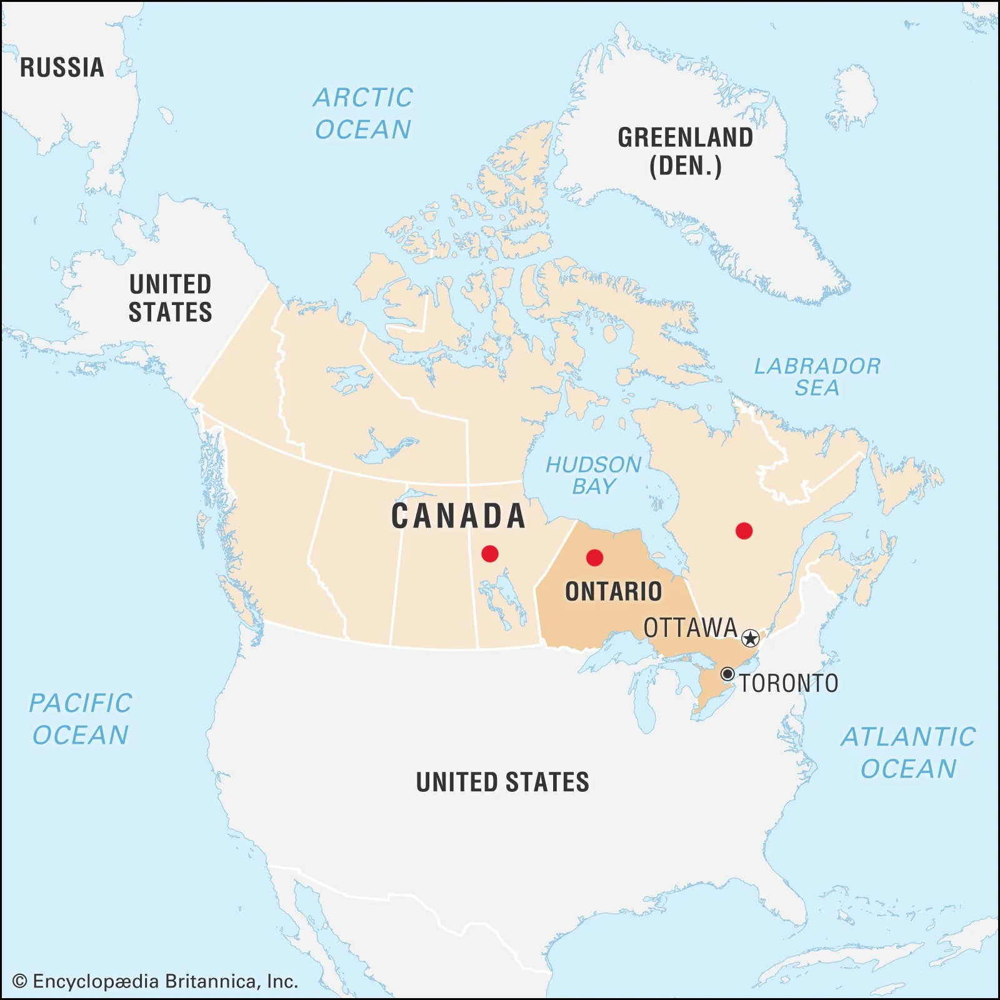

Nintendo DS Lite

Home Page
Nintendo DS Lite

The Nintendo DS Lite, also known as the DS Lite, is a dual-screen handheld gaming console made by the company Nintendo. It was released in March 2, 2006 and is the redesign of the original Nintendo DS model that was released in 2004. It is lighter, slimmer, and bright then the previous iteration of the DS. It is also touch- sensitive, Wi-Fi enabled and compatible with Game Boy Advance games. It is available in the colours Polar White, Jet Black, Lime Green, Coral Pink, and numerous others.
Features
✩ 4 MD RAM
✩ GameBoy and DS Slot
✩Four Brightness Levels
✩ Up to 19 Hour Battery Life
✩ Slim and Sleek
Populate DS Lite Games

✩ Mario Kart DS ✩ New Super Mario Bros. ✩ Animal Crossing: Wild World ✩ The Legend of Zelda: Spirit Tracks ✩
